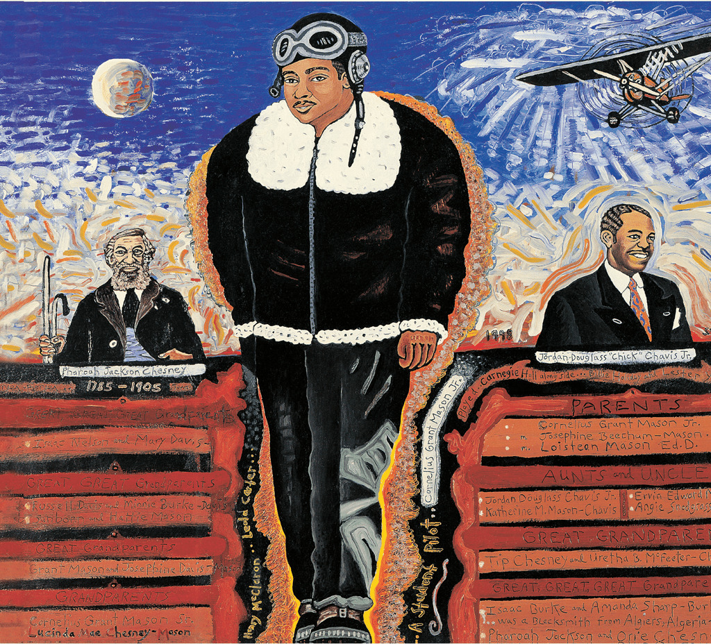

10

10
11
MY ANCESTORS
written by Stephen Von Mason
To our ancestors: May their spirits live forever. Let us always remember them by
naming our children after them and
researching our history, so that those who follow us may
also know their heritage.
—Katherine Mae Mason-Chavis (my aunt)
This painting is for my ancestors. On the left is my great-great-great-grandfather, Pharoah Jackson Chesney. He was a pioneer— one of the first settlers of Knoxville, Tennessee. He lived to be 120 years old.
On the right is my uncle, Jordan Douglass Chavis, Jr. He was a famous musician, the leader of a big band called “The Tennessee Collegians” from Tennessee State University. He was a musical pioneer. He started Tennessee State’s music department.
In the center is my father, Cornelius Grant Mason, Jr., in the clothes he wore when he was a student pilot in the late 1940s. He, too, was a pioneer—part of the first group of Black pilots in America.